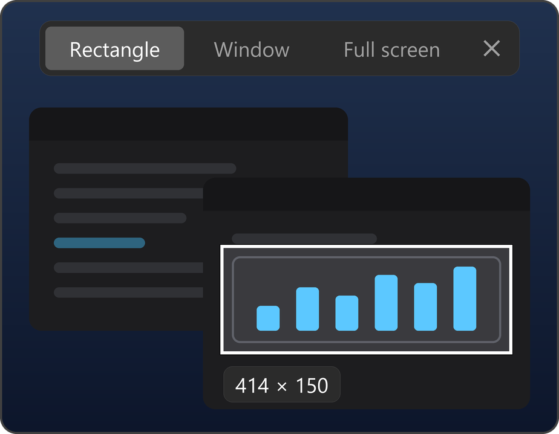
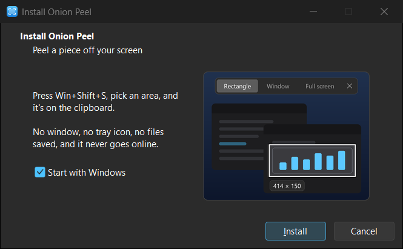
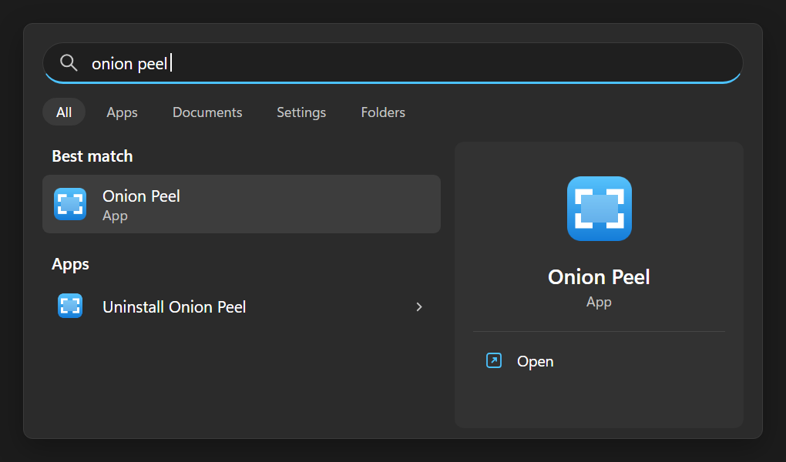

Press Win + Shift + S, pick an area, and it's on the clipboard. That's all it does. No window, no tray icon, no history, no files saved.
Installs in seconds, no admin rights · what's new
Not code-signed yet, so Windows may warn the first time: click More info, then Run anyway.

The picture is taken the moment you press the keys, so menus and tooltips stay put while you pick.
Drag a rectangle, or click a window or a whole monitor. Switch with 1, 2 and 3.
Snip across all your screens, HDR ones included.
Borderless fullscreen games get the snip screen right away. Exclusive fullscreen ones keep running, and the snip screen opens once you Alt+Tab out.
Bring another window to the front and the picture is retaken with it.
Esc or a right-click closes it. It stays out of screen recordings and shares, like OBS and Discord.

Choose whether Onion Peel should start with Windows, press Install, and it's running. No admin rights needed.
Running a newer installer updates it in place.
Search the Start menu for Onion Peel to start it, if you didn't let it start with Windows.
Uninstall Onion Peel is right next to it, or use Settings › Apps. It leaves nothing behind.
